PC optimisation and system tools for Windows
This is the largest part of the catalogue: tools that make a Windows machine behave the way you want it to. Cleanup and startup control, privacy switches gathered into one place, display comfort, docks and desktop shells.
Why these run on your own machine
System utilities are the category where trust matters most, because a cleanup tool by definition gets to see everything on the disk. That is the reason none of these applications create an account, phone home, or transmit a report of what they found. The tool runs, you see the result, and the result stays on your machine.
What to check before you buy anything in this category
- What it sends back
- Many free optimisers are funded by the data they collect. If a cleanup tool needs an account, ask what the account is for.
- Whether it explains what it is about to do
- A tool that deletes on your behalf without showing you the list first is not saving you time, it is taking a risk with your files.
- Whether it is honest about results
- Real gains from cleanup and startup control are modest and worth having. Anything promising to double your speed is selling something else.
17 pc & system applications available now
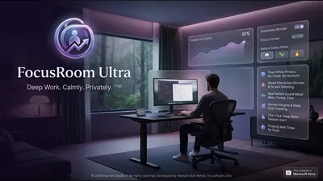
FocusRoom Ultra Windows Fully offline focus workspace Timed focus sessions Personal session statistics Everything stored on-device Full details HSX Automafy Windows Offline automation studio for Windows Visual automation flow builder Variables and reusable steps Flows and data stay on-device Full details HSX BootForge Windows USB boot media studio Write bootable USB media Works from your own local images Keeps a local history of writes Full details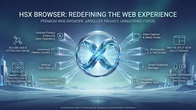
HSX Browser Windows Privacy-first Windows browser Private browsing with zero telemetry and no tracking No account and no cloud sync of history or settings Settings, history and cache stored only on your own PC Full details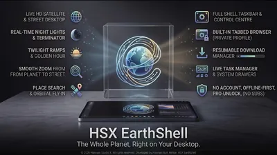
HSX EarthShell Windows Turn your desktop into a live map of the world Live world map as your desktop shell Home place, saved layout and offline tile cache Taskbar, windows and clipboard history stay on-device Full details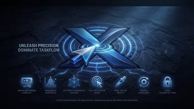
HSX SmartClicker Windows Automated clicking and macros for Windows Custom click intervals, patterns, and hotkeys Recordable macros and click profiles Runs entirely on-device — no cloud, no accounts Full details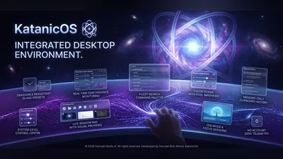
KatanicOS Windows Desktop command console for Windows Command-driven desktop console Custom layouts and notes Settings stored locally Full details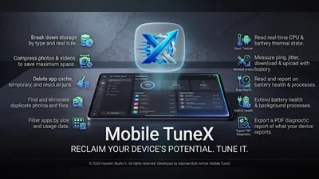
Mobile TuneX Android Keep your Android phone fast and clean Junk and cache file cleanup App permission auditor Battery usage optimisation tips Full details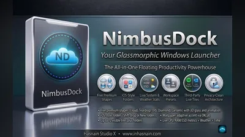
NimbusDock Windows Smart customisable dock for your Windows desktop Smart app pinning with live badge indicators Real-time CPU, RAM, and network stats Customisable position, size, and transparency Full details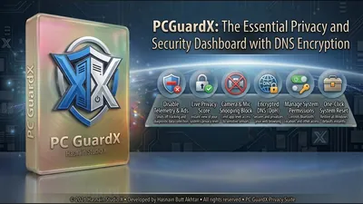
PC GuardX Windows One dashboard for Windows privacy controls Toggle camera, microphone, location, and Bluetooth access Switch off Windows telemetry, advertising ID, and activity history Ad-domain blocking and encrypted DNS presets Full details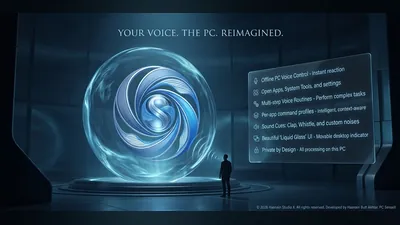
PC SenseX Windows Voice-controlled Windows actions, processed on-device Trigger custom Windows actions by voice On-device speech recognition using bundled offline models Microphone active only while listening is switched on Full details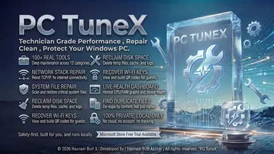
PC TuneX Windows One-click cleanup and startup optimisation Junk file and temp data cleanup Startup program optimisation Background process control Full details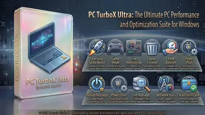
PC TurboX Ultra Windows Full PC optimisation with Turbo Boost and Game Mode One-click Turbo Boost — reclaims RAM, clears junk, activates high-perf mode Game Mode, Startup Manager, and reversible power controls File Manager with large-file finder and duplicate scanner Full details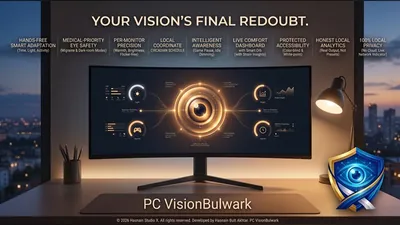
PC VisionBulwark Windows Local display comfort engine for Windows Local display comfort and eye-care controls No account, no sign-in, no cloud All processing happens locally on your device Full details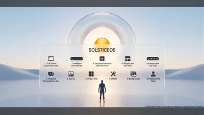
SolsticeOS Windows Private Windows desktop shell and launcher Clean app launcher with instant search Customisable widget panels: clock, notes, system stats Multi-workspace management Full details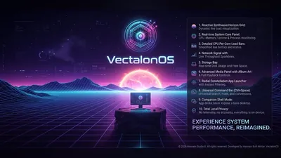
VectalonOS Windows Synthwave command deck for the Windows desktop Synthwave desktop command deck Local-first layout and settings No telemetry and no accounts Full details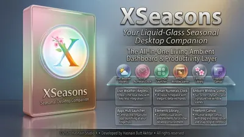
XSeasons Windows Dynamic seasonal wallpapers that change with the year Auto-switches wallpaper with the real-world season Hand-crafted scenes for Spring, Summer, Autumn, and Winter Scheduled daily or weekly rotation option Full detailsQuestions about pc & system apps
Do these tools work on Windows 11?
Yes. Everything in this part of the catalogue targets Windows 10 and Windows 11, and each application states its requirements on its own page.
Will they send a report of what is on my PC?
No. There is no telemetry in any application in the catalogue and no account to attach a report to. What the tool finds is shown to you and goes no further.
Do I need to keep paying to keep using them?
No. Each application is a free trial followed by one purchase.
Can I run several of them together?
Yes. They are separate applications with separate jobs and no shared background service running between them.
Other parts of the catalogue
Full Windows catalogue · Android catalogue · Privacy policies · About the studio
Hasnain Studio X® is a registered trademark. Product names shown on this page are trademarks of Hasnain Studio X.